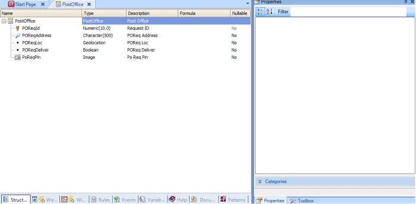

Every day, the postal service employee has to deliver many letters, and for this reason he needs to know the places near his delivery points, based on his current location. To this end, we will create a transaction where we will store all of the post office's requirements. In addition, we will have a smart device application to display, in a map, the delivery points (using the Control type SDMaps) and its current position (using the GetMyLocation method of the GeoLocation External Object). Below is a detailed description of the four steps required for this implementation. See in detail the four steps to perform this implementation. 1. Create the PostOffice transactionFirst, create the transaction that will be used to store all of the Post Office's requirements. POReqId * // Autonumber POREqAddress // CHar(500): Address or description POReqLoc // Geolocation: Latitude, Longitude POReqDeliver // boolean PoReqPin // Image: Image Icon  2. Create a Menu object and an Entry panel (WWPostNear) based on WorkWithdevicesPostOfficeApply the Work With for Smart Devices pattern (WorkWithDevicesPostOffice will be created) and set:
Create a Menu object and add WorkWithDevicesPostOffice item. (For further information see Applying Work With for Smart Devices Pattern). 3. Get my location and store it in the databaseCreate the "GetMyLoc" action in the WorkWithDevicesPostOffice List object, and invoke the GetMyLocation method. To create the action, click on List node, go to Events and select the "Add" action button (GetMyLoc). To invoke the GetMyLocation method, go to Events and write the following code:
Event 'GetMyloc'
&GetMyLocation = Geolocation.GetMyLocation(0,0,false)
EndEvent
// where:
// &GetMyLocation is based on GeoLocationInfo Data type,
// Geolocation is not a variable, it's an external object's static reference
Note: The GetMyLocation method must be invoked from an action; it can’t be invoked from a procedure because this method is executed on the device side. Create a nested action and from there invoke the procedure that stores “my position” in the database (the Composite command clause must be used to synchronically trigger nested actions). This action sets the GeoLocationInfo parameter, which is the result of invoking the GetMyLocation method mentioned above. It will be similar to the following:
Event 'GetMyloc'
Composite
&GetMyLocation = Geolocation.GetMyLocation(0,0,false)
StoreMyLocation(&GetMyLocation)
EndComposite
EndEvent
The StoreMyLocation procedure is similar to the following:
parm(&GetMyLocation); //Important: the name of the parmeter MUST Be the same of the Method which is invoked
new
POReqAddress = 'I am Here'
POReqLoc = &GetMyLocation.Location
POReqDeliver = false
PoReqPin.FromImage(here)
endnew
Create a nested action to refresh the data, writing code similar to this: SD Actions.Refresh().
In the end it will look as follows:
A complete Knowledge Base of these examples is available Postman See alsoGeolocation - Show points near me
|
| Backlinks | ||
| Geolocation - Showing My Location | Geolocation API - Scenarios | GetMyLocation method |
| HowTo: Using Geolocation Tracking | HowTo: Using SD Geolocation Control in Smart Devices |